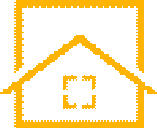

株式会社 ホームメイドは 木部防水塗装・木部補修工事・一般外壁防水塗装・水回り・内装クロス・畳入替え・建具補修などの建築リフォーム工事を専門とする会社です。
TEL. 058-262-5694
〒500-8029 岐阜市東材木町37-2
リフォームの楽しさと喜びをかたちにする。住む人の愛が溢れる、生命（いのち）が活きる、歓びの住まいづくりに貢献する。homemade-refom.com
※ ホームメイドは、建築リフォームを専門とする会社です。伝統的木造住宅の木部外壁の塗装、漆喰の塗替え、瓦の取替え、床の張替えから水回りまで、外構、どんなご要望にもお応えするリフォームのスペシャリストです。(Iphone用ページはこちら)
TOPICS 2021
※ ビフォーアフターでこんなに変わる！（写真クリックでビフォーへ）令和3年1月17日更新| 完成写真をクリックして、工事ごとに施工状況を閲覧できます。。zoomで現調しています。(無料) | |||
| 2021年1月2日更新 工事ごとに区分けして更に見やすくしました。こちらから | |||
| 2021 | |||
 |
コロナ禍の中だからこそできる快適な住空間を造るお手伝いを致します。 | 住まいのお困りごと zoomでもお電話で も対応できます。 |
 1/23更新 |
| 2020 施工事例はこちらから | |||
- 新春第一弾の施工事例、リアルタイム配信をしています。1/17更新しました。
NEWS新着情報
- 2021年1月2日
- 2021年の施工現場、現在進行中です。
- 2020年1月1日
- 株式会社 ホームメイド、スマホ対応のホームページが完成
- 2017年12月18日
- ホームメイドを法人化。 株式会社 ホームメイド になりました。
- 2017年 8月20日
- M邸の外塀防水塗装工事は完工しました。
- 2017年 4月3日
- H邸の外塀防水塗装は完工しました。
- 2017年 3月28日
- H邸の木製玄関手摺は完工しました。
- 2016年11月18日
- N邸の外塀防水塗装は完工しました。
- 2016年10月24日
- K邸の木部塗装は完工しました。
- 2016年10月7日
- K邸の木部塗装が始まりました。
- 2016年10月1日
- ホームメイドのビフォー⇒アフターをアップしました。
- 2016年9月28日
- ホームメイドの施工事例詳細をアップしました。
- 2016年9月1日
- ホームメイドの新しいホームページを開設しました。
- 2016年8月31日
- 岐阜の城下町に「リフォーム相談の窓口」をオープンしました。
- 2016年8月20日
- 城下町、木の家の補修塗装の相談コーナーを設置しました。


バナースペース
ホームメイドで嬉しいリフォーム！
〒500-8029
岐阜市東材木町37-2
代表者 臼井常雄
TEL 058-262-5694
FAX 058-262-5689
携帯 090-8451-0238